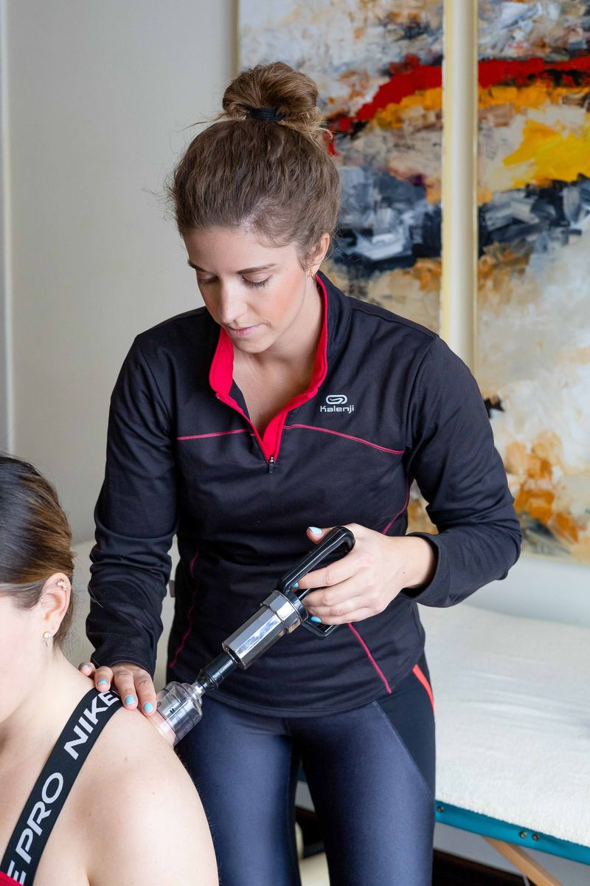
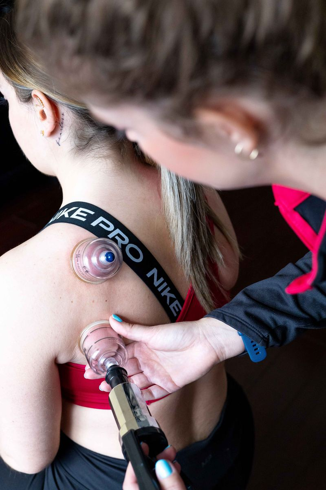
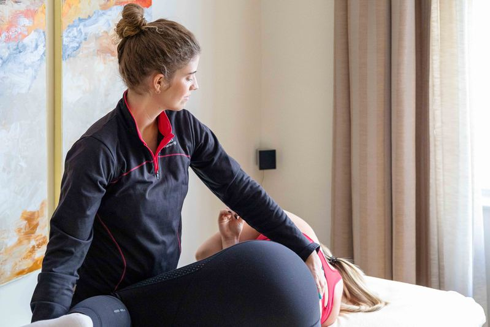

Servicios de fisioterapia
Cada tratamiento está diseñado de forma personalizada según tus necesidades, combinando técnicas avanzadas para conseguir los mejores resultados.

FDM – Fascial Distortion Model
Técnica avanzada de tratamiento de las fascias que permite diagnosticar y tratar distorsiones del tejido conectivo de forma precisa y eficaz.
Tejido conectivo
Ventosas (Cupping)
Técnica milenaria que estimula la circulación, relaja la musculatura y reduce la inflamación. Ideal para dolores crónicos y recuperación deportiva.
Terapia manual
Punción Seca
Tratamiento de puntos gatillo musculares mediante agujas finas. Altamente efectivo para dolores musculares crónicos y recuperación de lesiones.
Puntos gatillo
Fisioterapia Manual
Evaluación y tratamiento manual completo. Movilizaciones articulares, masaje terapéutico y técnicas neuromusculares adaptadas a cada paciente.
Terapia manual
Ejercicio Terapéutico
Programas de ejercicio personalizados para rehabilitación, fortalecimiento y prevención de lesiones. Incluye pilates terapéutico y trabajo postural.
Rehabilitación
Doula – Acompañamiento
Acompañamiento integral durante el embarazo, el parto y el postparto. Apoyo emocional, físico e informativo para una experiencia de maternidad plena.
Maternidad